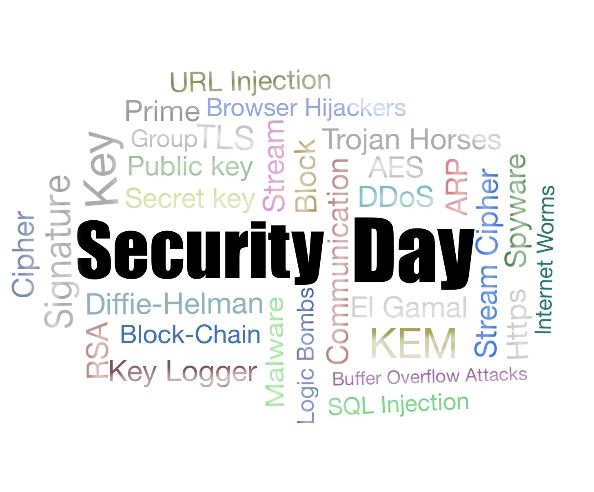

2016 Yuan Ze Security Day
Date: Saturday, 10 December, 2016
Location: Room 3208, Yuan Ze Building 3 (Yuan Ze University, Taoyuan) 元智三館3208教室
本活動由教育部104年度新型態資安實務課程計畫補助
The Security Day is an experimental one-day event that aims to stimulate interaction and discussion for security researchers. We will host 3 talks in blockchain and cloud security with long breaks for interaction. The meeting is free and open to everyone; in particular, students are encouraged to attend.
Speakers:
Tsung-Hsuan Hung (Academia Sinica), Raylin Tso (NCCU), Chia-Mu Yu (NCHU)